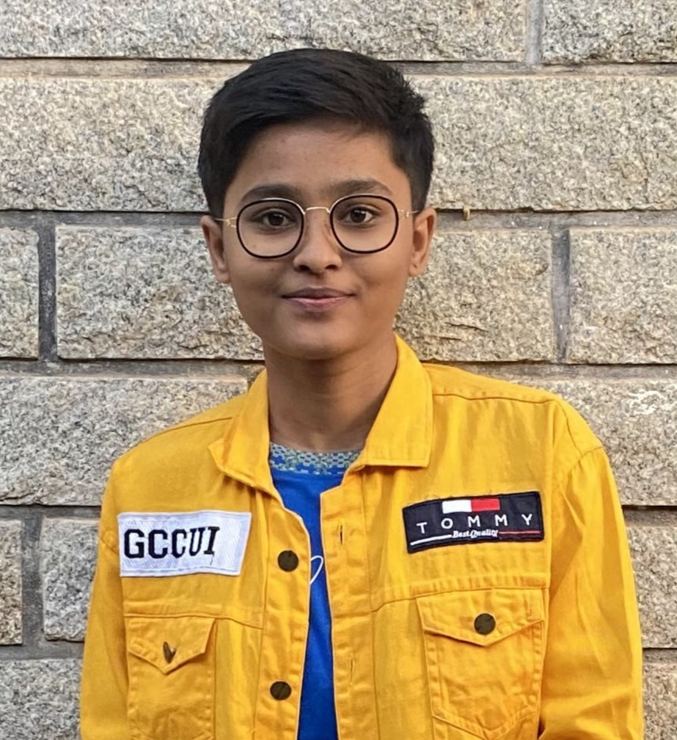

CAREER OBJECTIVE:
- Seeking an IT domain based role in a reputed company.
- I can contribute knowledge, skills, ability, and experience to the company.
- I want self-growth & development, and get experience from the company.

EDUCATION QUALIFICATION:
- Bachelor's of Engineering in Computer Science & Engineering
CMR Institution of Technology,
Bengaluru.
9.02 CGPA, 2026(Persuing)
- Pre-University Course in Science
Vidyaniketan PU Science College, Hubli
96.1%, 2022
- SSLC
Rajiv Gandhi Memorial English Medium School, Navalgund
90.03%, 2020
TECHNICAL SKILLS:
- Programming Languages:Python, Java, JavaScript, C, HTML
- Softwares:GitHub, Visual Studio Code, Eclipse, Sublime Text, Jupyter Notebook
- Operating Systems:Windows, Linux(Ubuntu), Android, iOS
- Web Technologies:HTML, CSS, JavaScript
- Database:MySQL, MongoDB
PROJECTS:
- ElectroHub Manager Web Development Project
- Event/Ticket Booking Platform
ONLINE COURSES & CERTIFICATION:
- MySQL from scratch for Data SCience and Analytics - Udemy
- The Web Developer Bootcamp 2024 - Udemy
SPORTS:
- Active player in games like Chess, Badminton, Carom.
- Participated in Athletics organised by NVS.